Berck 2009

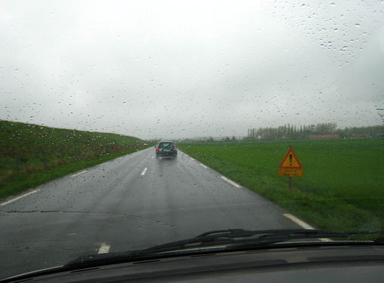
Les provisions faites, le fourgon bondé de tout ce qu'il faut pour tenir 10 jours, je prends la route le vendredi pour Berck par un grand beau temps. A 20 km des lieux de pêche, le ciel me paraît sombre là-bas ! Effectivement, j'arrive sous la flotte. Bon, Berck est tardif, cette année et ça devrait s'améliorer ; déjà, il ne fait pas froid et il ne neige pas, immense progrès...

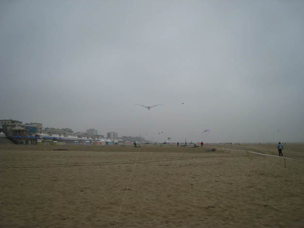
Samedi matin, il ne pleut plus, mais temps brumeux et petit vent. Mon oiseau-spiralier vole de justesse...

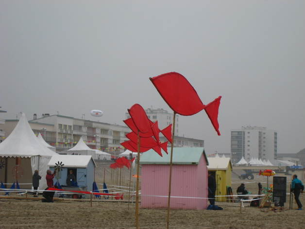
Au sol, Didier Ferment a conçu, et les Jardiniers du Vent réalisé, une série de poissons en bambous qu'ils disposeront tous les jours différemment.

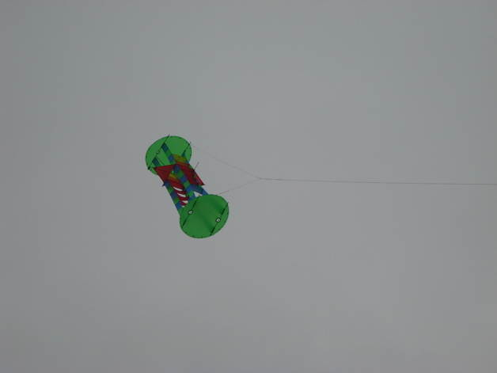
Loïk Lamalle est en l'air tôt comme d'habitude. Il a créé de nouvelles balises dont celle-ci qui ne passe pas inaperçue...

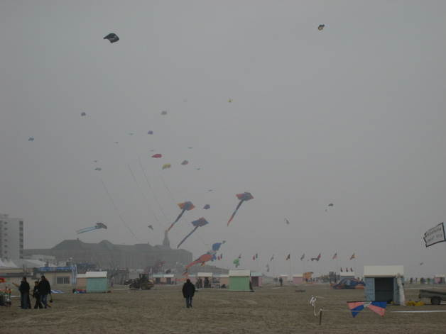
Mais petit à petit, le vent monte (ce sera comme ça presque tous les jours), et le nombre des cerfs-volants suit sans hésiter !

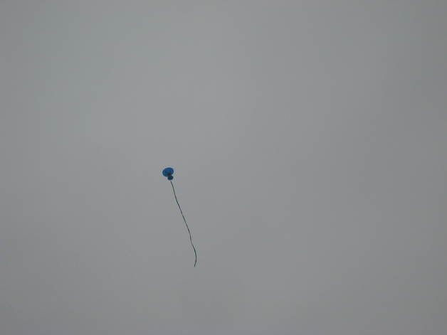
Loïk a aussi réalisé des Balises plus petites et plus toilées pour le vent léger et met tout en l'air...

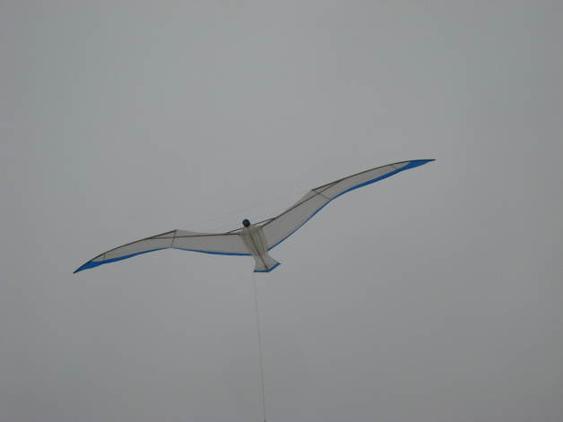
Le vent est si bien monté que je peux maintenant lancer Megoel, mon Méga-Goéland de 8 m de rémige à rémige qui se plaît bien dans cette fourchette de vent...

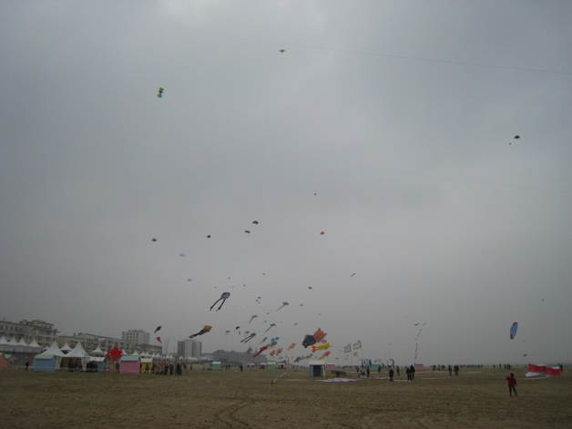
Le vent est quand même encore un peu hésitant, et le ciel ne veut pas se dégager : la brise de mer est faiblarde, et le ciel n'est pas trop coloré...

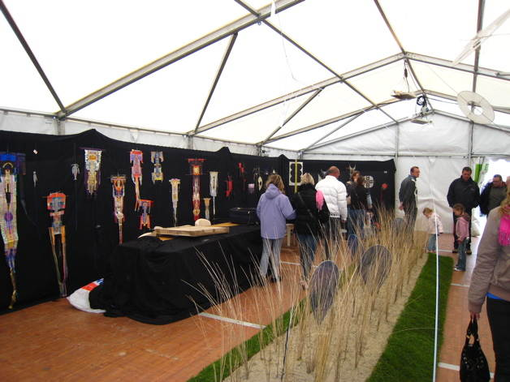
Un petit tour sur la promenade, on traverse la tente des artistes du cerf-volant, ornée de leurs réalisations ténues et originales...

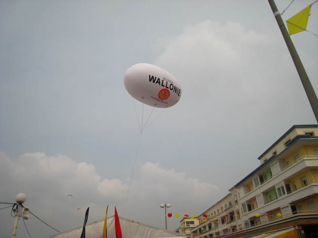
La Belgique, en tout cas la Wallonie, est présente et domine la fête !

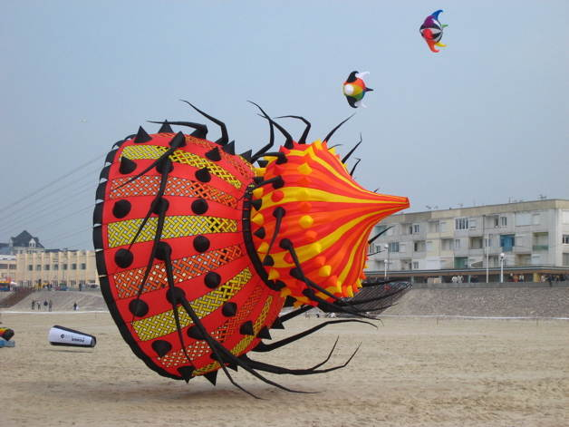
De Colours-in-Motion, Allemands comme leur nom ne l'indique pas, de magnifiques manches à air-bols très ouvragées, avec des tentacules quasi-animaux !

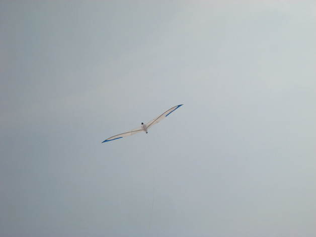
Le vent est encore monté, j'ai rangé Megoel et sorti l'Albatros (je n'arrête pas, aujourd'hui !), plus adapté au-dessus de Force 3...

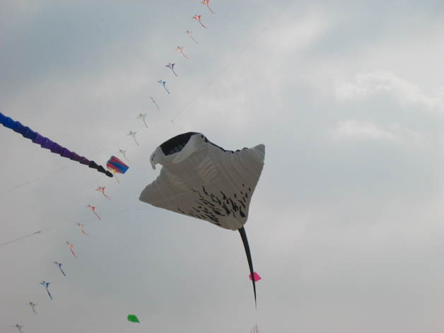
Là-bas, une raie Manta légèrement plus grande que la mienne et très réaliste, avec ses palpes de chaque côté de la bouche ! Cette année, la mode pour les raies est de laisser les pointes d'aile se relever, ce qui donne une souplesse animale, et augmente sans doute la stabilité...

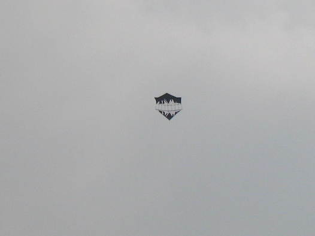
Inhabituelle, cette espèce de Roller avec une pointe avant réduite comme les Jessicas, avec sans doute les mêmes bénéfices, et une grande largeur pour sa longueur !

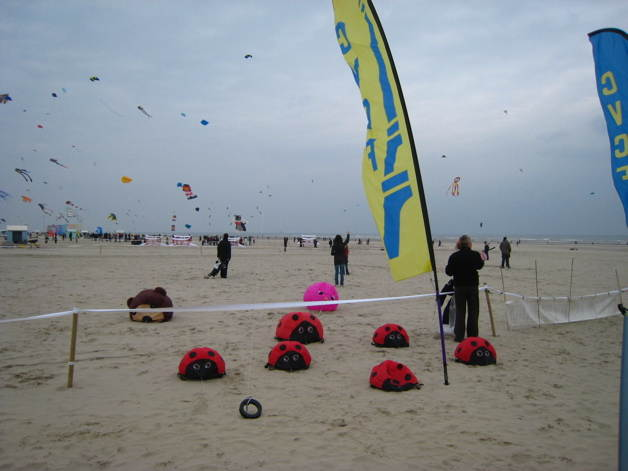
Michelle et Patrick l'Higuinen ont planté les bannières du CVCF et accroché la banderole sur la palissade. Ca fait un point de ralliement pour les membres, mais il y a aussi beaucoup de néophytes qui viennent demander un réglage pour les m... qu'ils ont achetées et qui ne veulent pas voler ! C'est souvent leur faute d'ailleurs, mais bien sûr, on ne leur a pas dit que le dièdre doit être mis vers le haut et pas vers le bas... Mais, des fois, on n'arrive même pas à faire voler de mauvais deux-lignes...

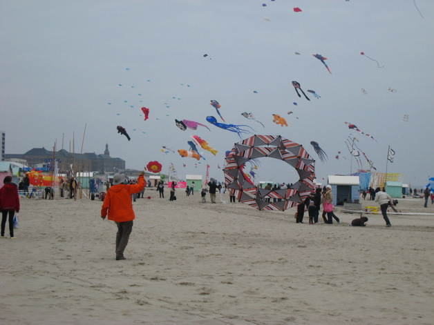
André Cassagnes serait content : une roue ! Très sobre dans son choix de couleurs, et le vent est un peu faible pour elle...

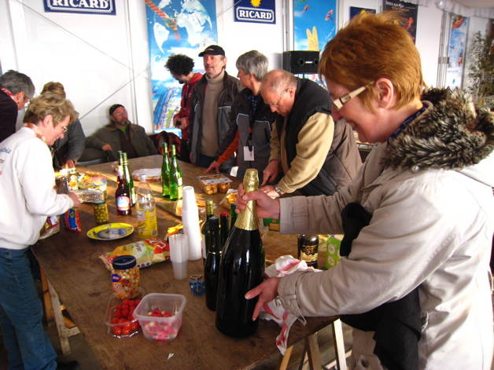
Au soir, les Jardiniers et quelques sympathisants ont organisé une pizza-partie dans la tente VIP. Chacun amène sa contribution au pot préparatoire, Patricia a une seule bouteille de bière, mais il faut presque être deux pour la porter !

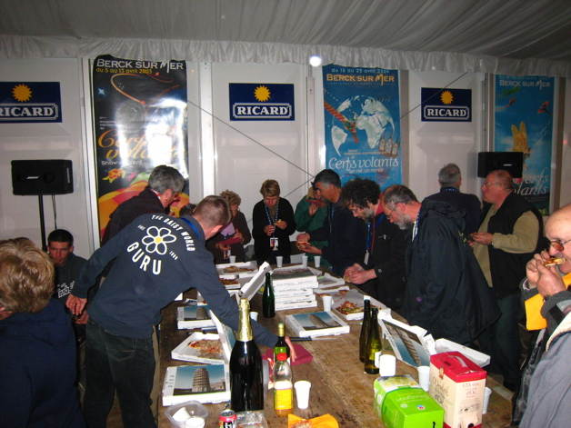
Les pizzas sont arrivées, enfin de sympathiques volontaires sont allés les chercher. On se jette dessus pour les découper, et il n'en restera rien !

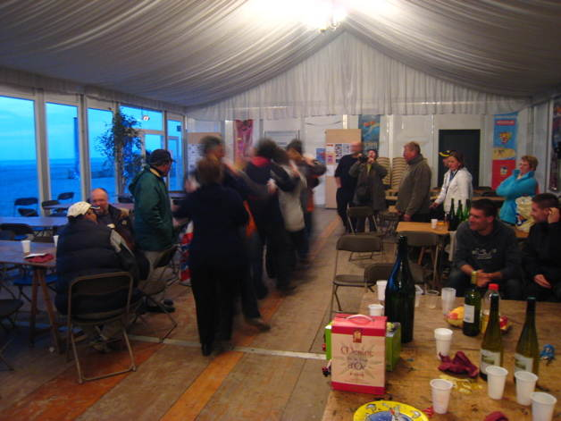
Après le dessert offert par Niekol, on répète la parade avec les poissons du lendemain, mais sans poissons !

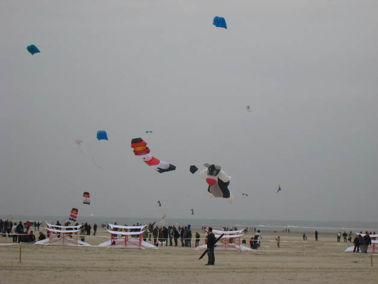
A terre ont été disposés les Saconneys pour l'ascension humaine (voir plus bas...). En vol, j'ai bien aimé ce phare gonflable aplati qui semble plutôt un jouet d'enfant issu d'une BD, ou une sucette...

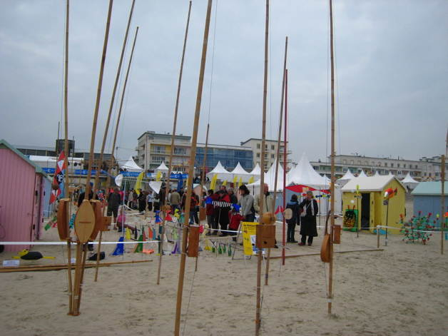
Dans les JdVs, Didier Ferment a replanté ses cordes vibrantes sur calebasses, et les enfants ne peuvent s'empêcher de tirer dessus, au lieu d'écouter la vibration du vent.

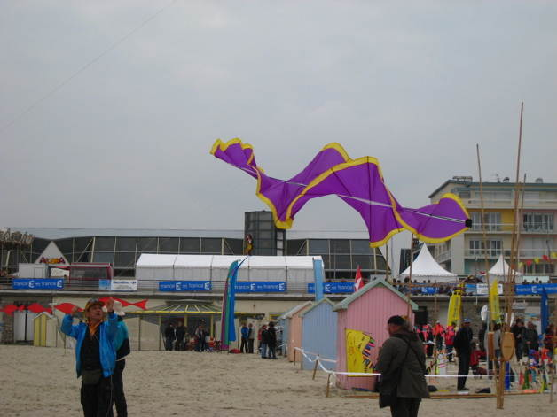
Un couple de japonais a sorti ses limaces de mer, de curieux cerfs-volants pas tendus, mais qui volent quand même....

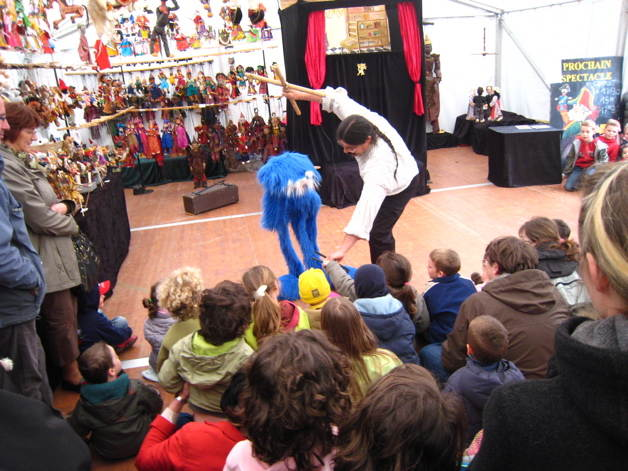
Sur la promenade, la tente des marionnettes en offre de nombreuses variétés, le montreur les manipule au milieu des enfants (ou dans le théâtre pour les classiques) !

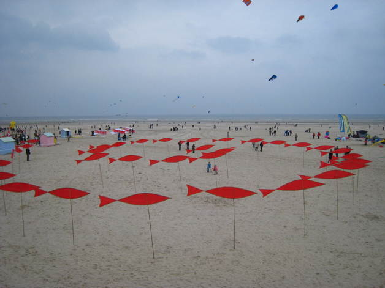
De haut, on voit mieux la forme de la spirale de poissons, qu'on perçoit mal d'en bas !

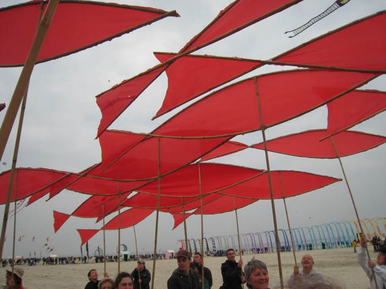
Nous avons aussi fait une parade dans le terrain de compétition, avec 35 porteurs et 35 poissons....

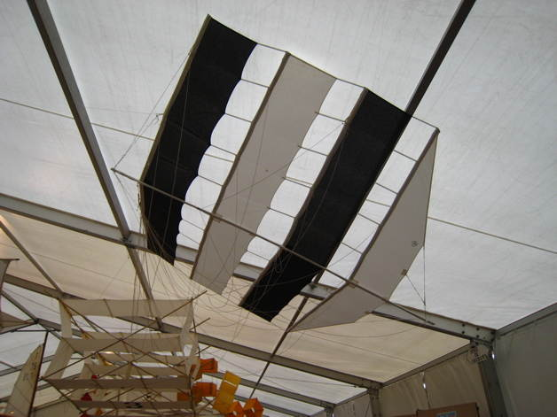
Sous un grand barnum, une exposition mixte de BDs (avec les dessinateurs en temps réel...) et de cerfs-volants anciens, allemands surtout... Mais Olivier Reymond a aussi exposé les siens, inspirés de BDs...

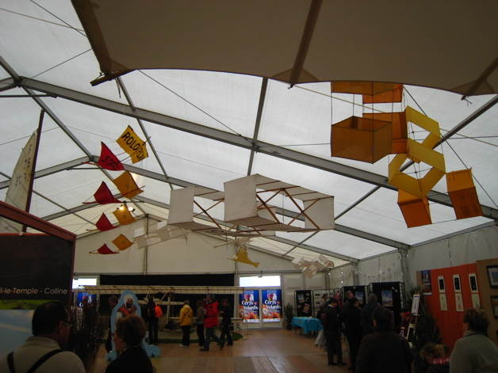
Boîtes Hargraves, Roloplans, toute la panoplie !

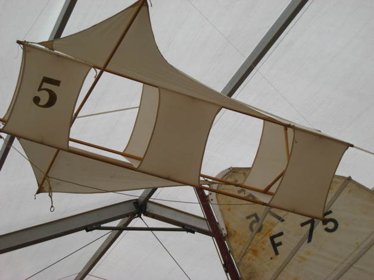
Celui-ci, avec ses petites ailes, doit être un porteur de grand vent !

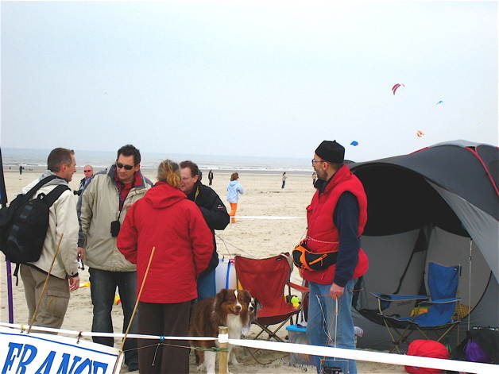
Du côté du CVCF, le point de ralliement fonctionne, on revoit même des anciens (aérophotographe) qui se réinscrivent au CVCF après 10 ans d'absence... On voit Jean-Daniel Chantelauze, Philippe Jullien, Michel Avril et Claude Dufresne (l'homme au chapeau), Gilles Poutoux et Catherine Renard avec des Jessicas, Damien Debril, Michel Van Reckem, José Wallois et Christian Bécot.
Le temps est devenu vraiment... Clément ;=) . Berck fin avril, c'est quand même plus agréable que mi-mars sous la neige, à se geler toute la journée, plus ou moins mouillé !

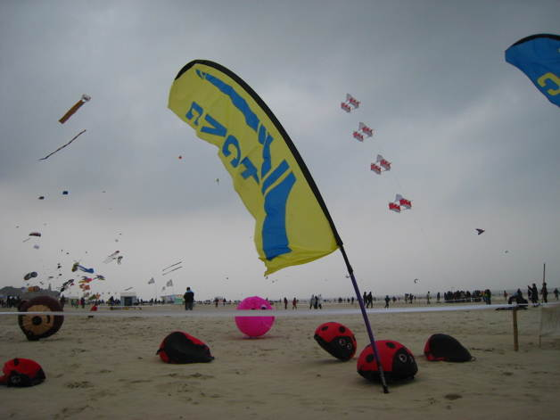
Le vent est maintenant monté à Force 4, la bannière du CVCF marque le coup ! Les ascensionnistes se réjouissent et commencent à lever le train : 1 Saconney-guide puis 4 en train rapproché.

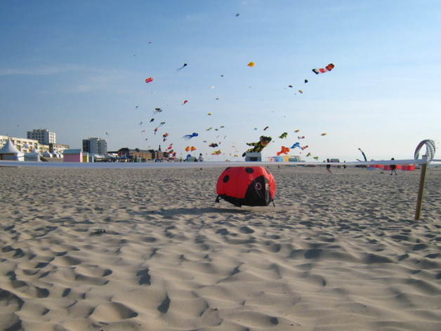
Les cox de la photo précédente sautent en tous sens, et la mienne décolle carrément !

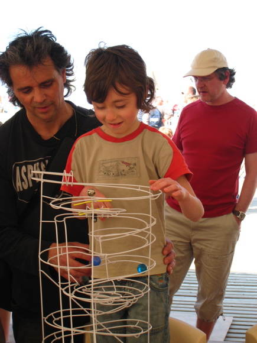
Les toboggans à billes de Joël Goupil ont toujours autant de succès sur les enfants extasiés...

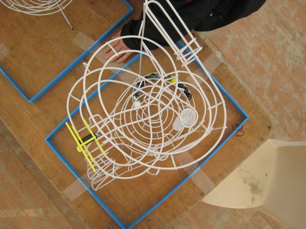
Si vous désirez en faire, je vous donne le plan, plus qu'à recopier !

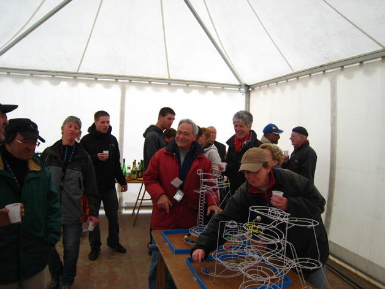
Bon, midi approche, on évacue les enfants, pas que ça à faire, l'apéritif attend ! Bien commode ce barnum avec des tables...

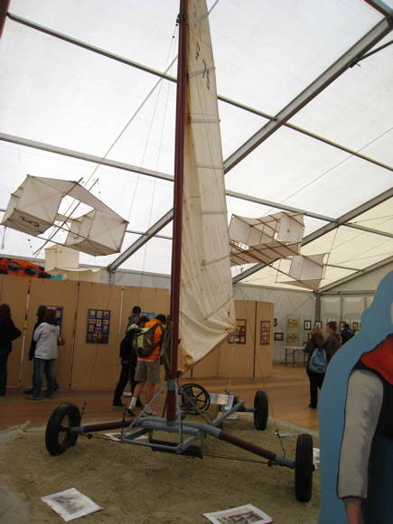
Retour du déjeuner, je refais un petit tour à la grande tente expo... Le char à voile d'époque est toujours là, avec sa conception que l'on sent bien rodée...

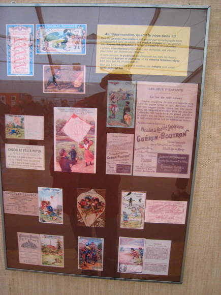
Philippe a exposé quelques-unes de ses cartes postales sur le cerf-volant...

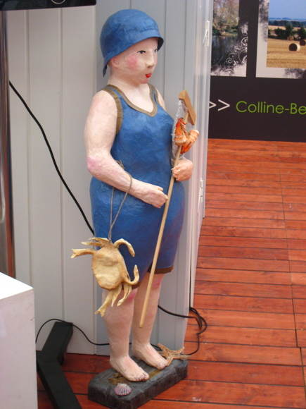
Il y a même une sculpteur, Françoise Suin, qui crée des sculptures en carton peint dans l'esprit BD et naïf...

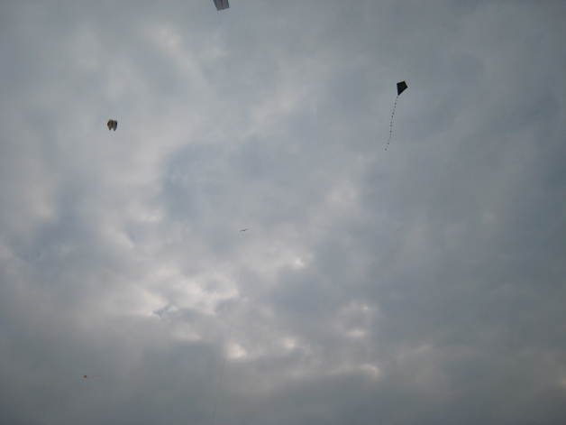
J'ai modifié un peu mon Spiralier pour qu'il supporte des vents un peu plus fort sans battre des ailes en crawl ! Du coup, je peux le monter en confiance tout au bout de mes 200 m de ligne...

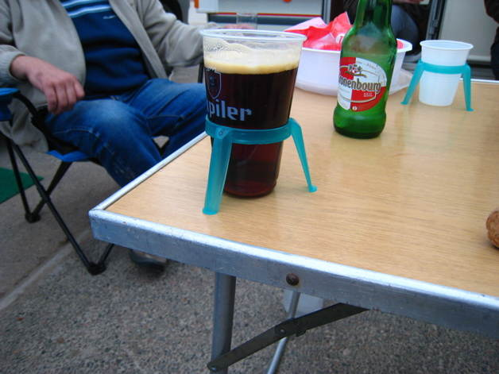
Au soir, retour au parc des camping-cars ! Une petite halte bien méritée après avoir traîné le sac de matériel dans le sable fin (y a pas assez de cabanons pour les cervolistes...). Des gens bien équipés pour ne pas renverser la bière m'accueillent...

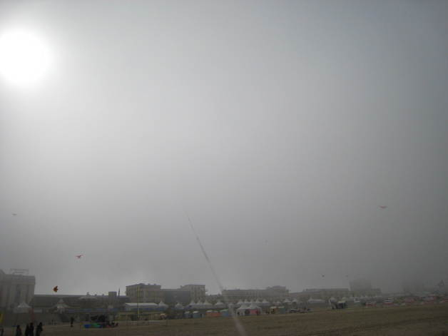
Malgré ses modifs, mon Spiralier reste performant par vent léger. Je finis par réussir à le monter, mais évidemment, avec le plafond bas, on ne voit plus que le fil. Mais moi, je sais qu'il est là !

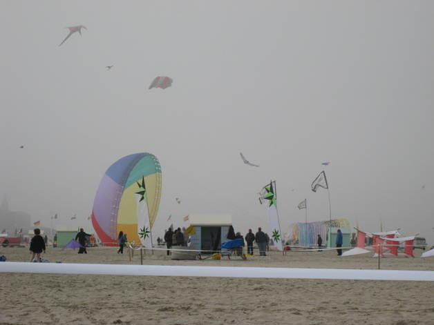
Le vent monte un peu plus et la brume se dilue. On peut distinguer, pas trop loin, un bol, mais qui ne tourne pas pour le moment.

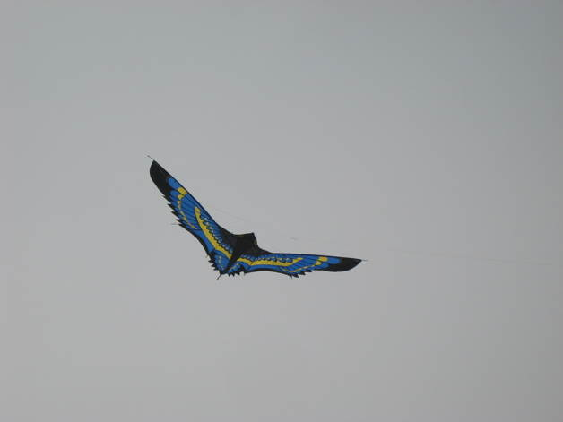
Le vent monte encore. Claude finit par arriver à faire voler un de ses splendides oiseaux !

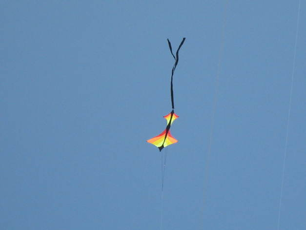
Dans le ciel, ce joli cerf-volant plat et coloré, très stable...

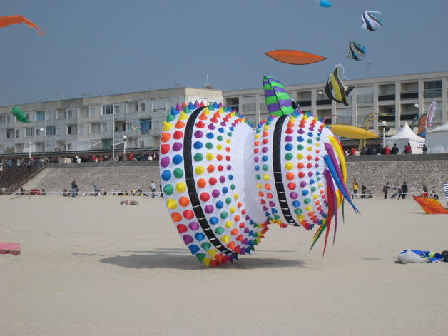
Les voisins allemands ont une autre manche sophistiquée et à tentacules... Pour le moment, elle rase un peu le sol mais se gonfle très bien.

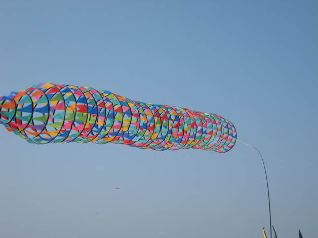
Ils ont aussi des manches sur des cannes, avec très peu de toile en fait, mais beaucoup de couture, évidemment. Contrairement à ce qu'on peut penser, elles se gonflent facilement !

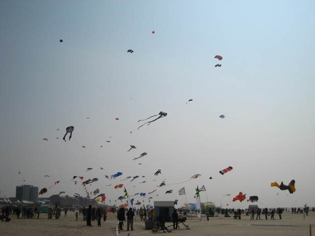
Le ciel s'est finalement dégagé, la brise de mer est arrivée, et il commence à y avoir pas mal de monde en l'air...

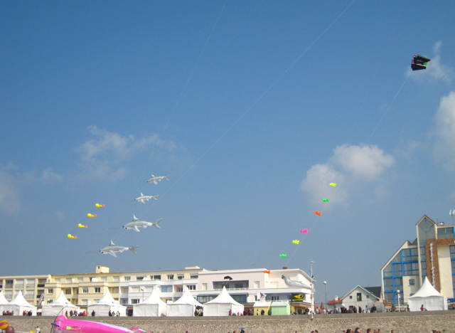
Nombre de guirlandes de Titis, de requins, de Nounours, de phoques, etc. meublent le ciel...

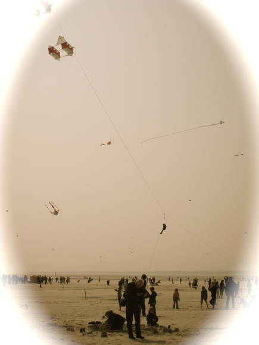
Cette carte postale d'ascension humaine va inspirer les démonstrateurs actuels...

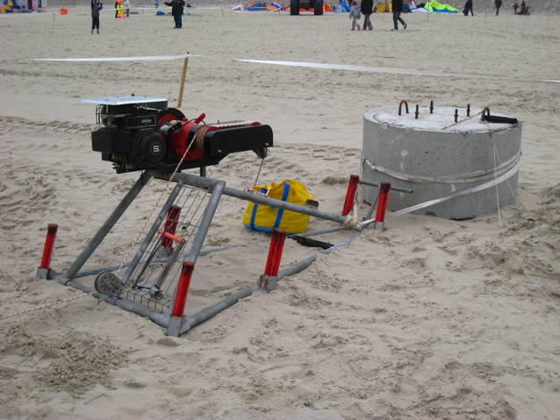
Le treuil a été mis en place, les 6 barres plantées dans le sol à la masse et le tout attaché à un énorme plot de béton !

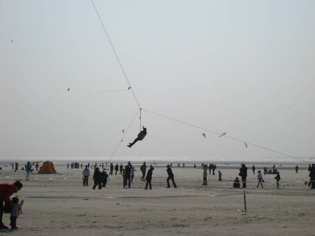
Pas de nacelle, mais un harnais moderne de travailleur à la corde. Bon, c'est parti, après un essai sur ultraléger, on s'attaque à plus lourd. Vous le reconnaissez, bien sûr ?

Mais oui, c'est lui, il a pris le risque, bien que le vent soit un peu juste pour sa... taille. Il jouera quand même la navette verticale plusieurs fois...

Evidemment, plus léger, on peut monter plus haut. Pas très haut quand même, car si on redescend vite, il faut que ce soit dans le terrain, assez limité...

La preuve que le train vole, son ombre est là, et montre la taille respectable de l'ensemble...

Il n'y a pas eu d'arches gigantesques, seulement celle-ci près des JdVs...

Le temps est beau, le vent est idéal, faut faire quelque chose ! Je mets en l'air ma grue avec le réglage trouvé à Chatel (dièdre=0) pour contrer le balancement. Ca marche, mais pas de mérite, le vent n'est pas fort !

Dans l'élan, je mets en vol, avec 10 m de ligne en épi, la 2ème grue en parallèle... Elles volent un peu trop semblablement, donc trop proches, il faudra que je les dérègle pour les séparer !

Vue de profil pour contrôler, ça m'émeut aussi...

A force de flirter, elles finissent par s'accrocher, mais volent bien comme ça... C'était aussi ma solution de rechange, ici expérimentée par hasard !

Il est quand même agréable de voler sous un ciel bleu, au chaud, et avec un petit vent de mer bien lisse...

Déjeuner quand même, dans la splendide tente VIP, à table, avec pas trop de queue en semaine ! On se retrouve, on se rencontre, on se présente, on cause, quoi !

Après déjeuner, tout le monde se jette sur les ficelles, et le ciel s'emplit de formes et de couleurs...

Je mets ma coccinelle en dehors des barrières pour que les enfants puissent la toucher... N'empêche qu'une petite fille, à peine plus âgée que celle de la photo, a déterré le piquet pour partir avec la bête ! Et un groupe de Djeunes partait effectivement avec en mon absence quand une amie les a rattrapés !

Cette orque plait bien aussi aux enfants. Ils en ont vu dans les films ou les dessins animés...

J'ai bien aimé aussi ce pyrodelta bleu dont les queues ne sont pas des pièces rapportées, mais font vraiment partie de l'architecture graphique... On a revu aussi le très grand delta allemand rouge à caisson noir, agrémenté cette année d\'une longue quille verticale...

Jean-Daniel Chantelauze, le nouveau magasinier du CVCF, a monté cet important Polyfax JCV (voir Lucane 127) stable et tractionnant pour faire de la photo aérienne...

Pas encore de baigneuses, mais ces jeunes filles s'amusent en rond à des jeux de plage !

Merveilles de la Nature : Vallée des Rois en Egypte, ou présence d'eau dans les canyons de Mars ?

Là-bas, dans l'aire de démonstration, d'immenses trains de révos se croisent en un harmonieux ballet...

Sur la promenade, atelier de grands sleds pour les enfants, tenu par des membres du CVC Celtique. Trop de succès, on a manqué de baguettes et de plastique dès le 5éme jour...

Un stand montre le Berck des années 30, avec ses hôtels particuliers ou non, en styles divers, russes, bruxellois, etc....

La réalité actuelle est assez différente ! Plus de capacité, c'est sûr, et plus de commerces, mais l'esthétique...

Une gentille dame fait aux enfants des maquillages de contes de fées, moyennant quelques sous...

François Guzman a ressorti son ptérodactyle qui n'arrête pas sa nage alternative au-dessus de nos têtes...

De vrais oiseaux passent en formation, sans dévier d'un pouce au-dessus de ces imitations qu'ils survolent de beaucoup...

Pourtant, il y a des proies intéressantes, comme ces deux beaux insectes colorés...

Une série de grands bols, dont une roulette, tournent sur une plage où l'on a, avec plaisir, plus envie de se protéger du soleil que du froid...

Colours-In-Motion ont aussi levé ce train de nounours LEGO (je ne vois pas d'autres qualificatifs) !

Le vent est maintenant bon, je sors mon Condor de 6 m, qui commence à être un peu usé, voire déchiqueté, mais il est trop compliqué à refaire, je répare seulement l'essentiel... Il monte quand même à 200 m sans problème, une fois équilibré...

Les grands bols sont maintenant 6, l'Arcturus a pris son vol, et le drapeau français flotte sur la plage de Berck...

Dans les JdVs, les boules des stalactites de stylos de CarnetdeVol tracent sur le sable de mystérieux enregistrements...

Les Suisses ont fait voler ce cerf-volant imité d'une bonne femme très colorée de Niki de Saint-Phalle...

Christian Becot aérophotographie de haut les JdVs... sans utiliser de cerf-volant ! La perche, c'est plus simple à mettre en oeuvre où on veut (même en salle si besoin !).

Dans les JdVs, toujours, ces étamines disposées différemment selon les jours...

Les jardiniers se sont imposé un thème : le poisson... Vous connaissez déjà celui de Néné, rigide et coloré.

Patricia Ghesquière a fait classique, mais toujours avec des petites cuillères ornementales...

Emmanuel Duba a évidemment construit un poisson... chat !

CarnetdeVol a bâti un poisson à base de coquilles Saint-Jacques. Enfin, des ersatz de coquilles, c'est plus léger à transporter et plus facile à fixer...

Jean-Claude Anquier a créé le sien à partir d'une bouteille plastique, surprise ! Aucun collage, qui ne tient pas sur ces plastiques spéciaux, c'est soudé à chaud !

Patrick Guilbert et Annick ont surplombé leurs pomponnettes de ce poisson plein de vide qui ne masque pas leur oeuvre...

Le fanatique du bambou a réalisé celui-ci, dont le corps est en feuilles de bambou évidemment...

Celui-ci, de François Guzman, possède des arètes réflectorisées pour animer la nuit...

Même au déjeuner, on nous sert du poisson. Au dessert, ce qui est rare...

J'abandonne un peu cet après-midi mon oiseau à son sort pour aller sur l'aire de démonstration regarder ce qui s'y passe... Elle est toujours bordée d'un mur de bannières que je vous montre toujours verticales, d'habitude...

Un mini-mégateam réunit les meilleurs, la Red Bull Kite Force, les Impossible, les Tame Birds... La RBKT a écrémé le cerf-volant : leader Yassou, équipiers : Richard Debray, Ramlal, et un troisième que je ne connaissais pas mais qui ne dépare pas la panoplie...

Les Anglais ont orné leurs trains de révos multicolores de rubans qui donnent un beau volume à leur démo !

Toujours dans le terrain de démo, un énorme bol (60 m2 de tissu !) qui décolle sans problème avec sa large surface de fond...

Un autre team 4-lignes présente des formations et évolutions de 5 Révos assez agréables. Ce n'est pas ma tasse de thé, je trouve les 4-lignes toujours lents, imprécis et hésitants par rapport aux 2-lignes aux trajectoires harmonieuses par nature...

Le mini-megateam revient et offre en particulier une belle montée en escalier pour prouver la valeur individuelle de ses membres...

Le team Impossible (moins Julie, faut des vrais hommes !) présente encore un ballet de trains de flexis...

Je retourne vers mon terrain du bout, en notant au passage cette sorte de pyro à l'architecture médiévale un peu en ruine !

Et puis ces hirondelles qui tournicotent joyeusement au bout de leurs cannes à pêche...

Fin d'après-midi, retour au camion par la Promenade. Le Capitaine Pic organise des régates en piscine, départ au top pour un aller-retour, au grand enthousiasme des pratiquants...

Le soir, un gamin a joué avec son briquet... Deux extincteurs et les pompiers en viennent à bout. Le gamin est un gamin (j'espère quand même qu'il aura retenu la leçon), c'est le père qu'il faudrait fesser pour lui avoir donné ou laissé un briquet...

Beau temps, mais vent de terre, changeant et turbulent. L'équipe des Saconneys de Daniel en emmène un courageusement jusqu'à la mer avec 100 m de câble...

En haut de plage, les Géants font un petit tour parmi les enfants, les plus jeunes pas toujours rassurés...

Les goélands se répandent, on en voit même battre des ailes sur la promenade...

Du jamais vu au festival de Berck, plutôt enneigé d'habitude, des baigneuses se dorent au soleil...

Michel Darnis est arrivé. Il a créé de nouveaux moulins, qui ne font pas de musique, mais agitent en tous sens des roues, des palettes, un peu à la Tinguely !

Voici l'homme, et sa profession de foi...

Gérard Rosenblatt est venu aussi pour ce week-end, avec des poissons en sacs plastiques cousus ou collés à chaud et une jolie méduse qui exploite les transparences de la matière et agite ses tentacules dans le vent...

Voici justement les poissons suisses, surveillés par Margit (vous savez, elle organise avec Bernard le festival de Vercorin...).

Dans l'eau, les surfers profitent du bon vent, pas tout-à-fait assez décoiffant pour eux, mais ils peuvent quand même tracer...

Vendredi soir, la fin approche. Ce soir, gala au Kursaal. En chemin dans un stand, ces ballons amusants et velus, mous mais rebondissant un peu que l'on peut facilement attraper d'une main et relancer...

L'intérieur du Kursaal a été décoré de ces innombrables lucioles qui cachent bien le plafond un peu fatigué !

Evidemment, Mr le Maire fait un discours pour remercier tout le monde, se féliciter, et souhaiter que ça continue. Cette année, tous les records de fréquentation ont dû être battus, il y avait du monde en semaine comme en week-end... On décerne la médaille de Berck cette année à David Gomberg, récent président de l'AKA, qui est au CVCF ce que la NASA est au CNES...

Ensuite, dîner, queue aux buffets comme d'hab (un peu moins cette année) et repas largement servi...

Et puis le DJ prend la main avant le fromage et tout le monde se met en piste au rythme de YMCA et autres tubes entraînants...

Le samedi, pas de grasse matinée, au boulot ! Gérard Rosenblatt a sorti un de ses cerfs-volants cubiques favoris, le Dragon et le Phénix... Toujours en plastique cousu, bien sûr !

Un joli cerf-volant encore, cet octogone à la structure bien visible et simple, comme son graphisme !

Celui-ci est plus fantaisiste et évoque un oeuf au plat... Il lui faut un bon paquet de queues...

Les Sens Ciel sont arrivés ce matin avec leur grand hérisson...

Ils montent aussi en parallèle leur immense dragon...

La bande d'Hurricane a réussi, avec l'aide des tracteurs de l'organisation, à mettre en place dans le sable sa remorque sophistiquée et tout son petit monde...

Avant le vol de nuit, nouvelle pizza-partie pour éviter de sortir tard du restaurant... François Périault est venu passer le week-end et s'inscrit in extremis...

On regarde la nuit tomber lentement, en admirant de la tente ces belles bannières arborées !

Les AWITA ont posé un de leurs nombreux Deltas sur un cable électrique qui a légèrement chauffé... Gérard est intéressé par le résultat !

Le soleil se couche, derrière ces bannières au look chinois ancien, il va falloir se préparer pour le vol de nuit...

Effectivement, les grands cerfs-volants qui sont montés bien haut avant restent en l'air. Les autres, comme cet impressionnant dragon doivent être tenus en l'air à la force des bras... et des mollets...

Le spectacle est surtout basé sur des pilotables, qui arrivent tant bien que mal à se maintenir en l'air... Je ne sais pas trop quand les cerfs-volants lambdas doivent voler, alors je me tiens un peu à l'écart, comme les Nasas des Pirates...

Le spectacle aérien est éclairé par des poursuites, mais comme leur mouvement est automatique, elles ne peuvent pas voir qu'elles n'éclairent que les nuages, et pas les quelques cerfs-volants qui survolent !

J'aurai quand meme un admirateur qui me dira apres avoir bien aime...
Du spectacle, on embraye direct sur un très beau feu d'artifice... Bon, c'est beau, mais je suis venu pour voler, na ! Je reviendrai donc après, quand tout le monde reviendra saluer, et je volerai moi avec mon Harfang, quasiment en mode indoor par vent nul, tout seul au milieu des milliers de Watts des projos rallumés !

Dimanche matin, un peu grisouillard, peu de vent, Gérard Rosenblatt sort son ballon solaire (oui, en plastique...) qui vole de justesse...

Emmanuel fait de même avec le sien, mais il n'a quand même pas pu soulever la nacelle et le chat aérostier...

Dimanche matin, enfin à 12 h 30 (mais quand est-ce qu'on mange ?), parade en ville. Bien sûr, on prend les poissons, mais c'est difficile à maintenir, et je ne ferai pas de photos... D'autant qu'on n'a pas une minute : aux arrêts, on fait des figures, marche arrière, valse-hésitation, etc.

Vous saurez qu'il ne faut jamais venir tard aux pots...
Après nous en majorettes-poissons, les vraies, plusieurs groupes. Comme nous, le défilé fini, elles viennent se restaurer et d'abord profiter du petit pot officiel !

Au déjeuner, David s'étant plaint publiquement au Kursaal de l'insuffisance des cheese-burgers français, les chefs lui en ont confectionné un spécial, de taille respectable...

Après déjeuner, retour par la Promenade et ses stands. Celui de Laurent et ses sculptures en bois et colifichets asiatiques...

Un peintre public réalise et vend ses tableaux, acrylique au couteau, en bordure des arcades...

Mais dans le ciel, deux immenses flow-forms, qui se maintiennent, eux, sans porteurs...

Mon Albatros à la main au bout de sa ligne, je fais un dernier tour des surfaces. Tout au bout, les Pirates s'entraînent à la Nasa en team, les pieds (et pas seulement) bien ancrés dans le sable...

Dans l'aire de démo, les présentations se succèdent toujours sans temps morts ! Ici, 4 Révos en figure carrée.

Au sol, les trains de 2 lignes sont prêts à prendre l'air...

En se retournant, on peut constater que, si le soleil a brillé sur la plage toute la journée, sur terre, au contraire, il se pourrait bien qu'il pleuve...

Au soir, dernier repas au Gré Du Vent, pour ne pas se quitter comme ça... Toujours bien accueillis, et les clients sont presque tous cervolistes, donc se connaissent les uns les autres... Même Gérard y vient occasionnellement, en cerf-voliste qu'il est...

Je dormirai encore à Berck, et lundi matin, retour à la maison par les petits chemins... Un peu de pluie au départ, mais ça s'arrange bien ensuite.
Berck 2009 : Un gros changement, la période plus tardive qui a rendu le festival bien plus agréable: des conditions volables tous les jours, pas de périodes de pluie et de froid, voire de neige qui gâchent la fête ! L'organisation est égale à elle-même, c'est-à-dire impeccable, malgré les problèmes posés par le volume de l'ensemble. Un grand souvenir de cette année, en tout cas !